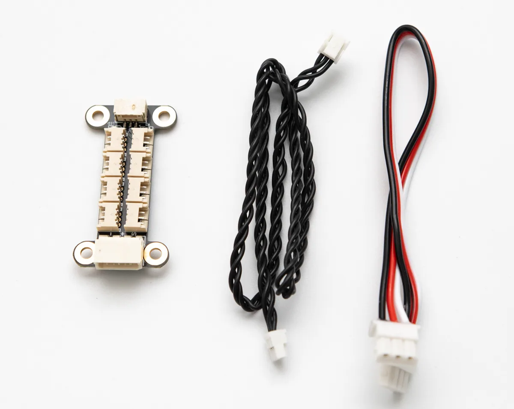
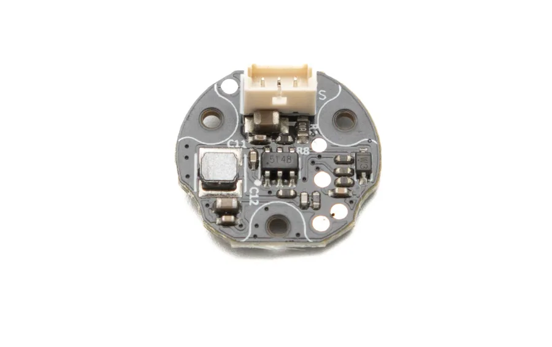
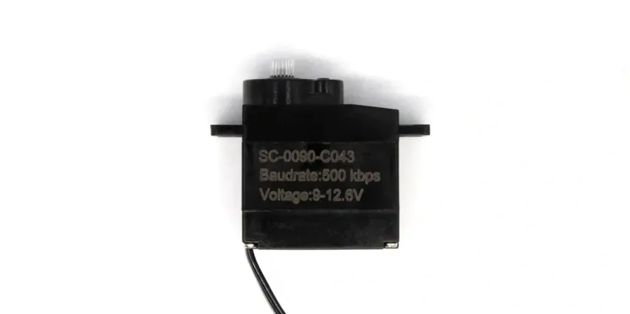
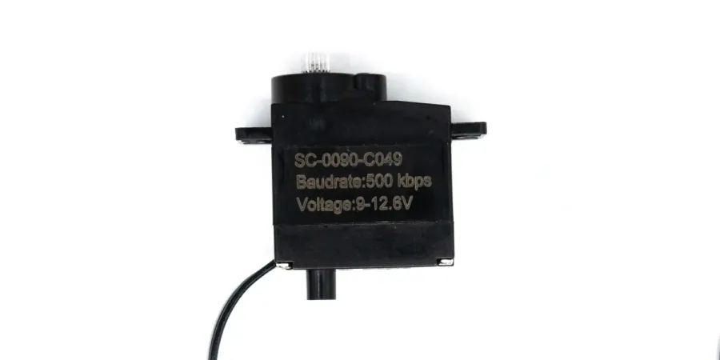

适合小型结构
HC-1.25-3P 接口更小，适合灵巧手、小关节、紧凑机械臂和传感器模块。
减少占用空间WHAT IT SOLVES
TTL Encoder E02、微型总线舵机和其它小型 TTL 设备常常安装在空间很紧的结构里。HC-1.25 8P Hub (A) 使用更小的连接器，把多个设备集中到一块轻量分线板上，减少飞线和临时接线。
HC-1.25-3P 接口更小，适合灵巧手、小关节、紧凑机械臂和传感器模块。
减少占用空间多个 TTL Encoder E02 可接入同一条总线，主控按 ID 读取角度与速度。
适合多关节反馈SC-0090-C043、SC-0090-C049 等微型总线舵机可与其它 TTL 设备共线。
适合小型执行器设备都接到 Hub 板上，插拔、替换和排查线序更方便。
降低原型搭建成本WIRING

EXPAND DEVICES
适合把小型传感器和微型执行器放到同一条 TTL 总线上，减少主控接口占用。




BUS SYSTEM
在小型机器人里，反馈和执行往往都需要靠近关节布置。通过 HC-1.25 8P Hub (A)，多个编码器和微型总线舵机可以汇入同一条 TTL 总线，由主控按 ID 统一读取和控制。
SPECIFICATIONS
PACKAGE
SUPPORT
建议先确认接口线序、供电能力和设备 ID，再逐步增加编码器或舵机数量。